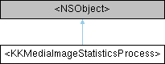

Shine
Loading...
Searching...
No Matches
Properties
|
List of all members
<KKMediaImageStatisticsProcess> Protocol Reference
Inheritance diagram for <KKMediaImageStatisticsProcess>:

Properties
CGFloat
maxSize
Property Documentation
◆
maxSize
- (CGFloat) maxSize
read
write
nonatomic
assign
统计时图片的缩放，高尺寸图像便于优化 maxSize=0, 使用图片本身尺寸
The documentation for this protocol was generated from the following file:
Shine/Shine/Sections/ImportMediaSection/Model/Image/
KKMediaImageStatistics.h
Generated by
1.9.8